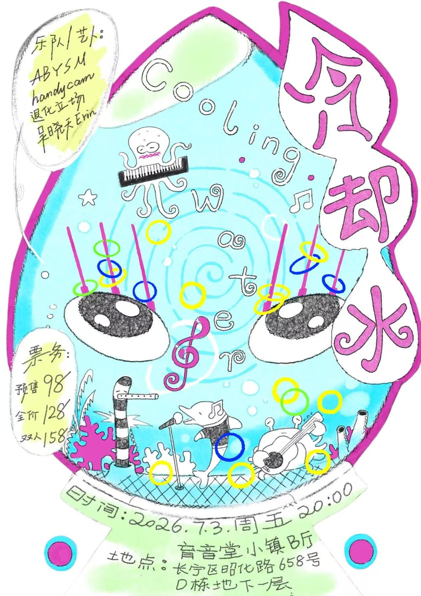

upcoming / Medium
Cooling Water
Yuyintang B Hall live-electronic / experimental bill with Handycam, ABYSM, Tuihua Lichang, and Wu Xiaotian Erin. ShowStart confirms the July 3 20:00-23:00 timing, B Hall venue, address, lineup, and 98/128/158 RMB ticket tiers; the Yuyintang WeChat screenshots add the event poster and Chinese sound notes.

DateJul 3
Time20:00-23:00
VenueYuyintang Music Park B Hall
DistrictChangning
Sounddark wave, trip-hop, experimental rock, jazz/R&B crossover
Price98 / 128 / 158 RMB
Age / IDCheck venue
Source layershowstart-plus-wechat-screenshots
Intensityhard
Credibilityloose
Event Tags
Simple tags for sound, room context, ticket/source status, and details that still need a source check.
How We Recommend This
- RecommendationRecommended for readers who want a live, listening-first night rather than a straight club bill: ABYSM brings dark-wave/trip-hop synth pressure, Handycam and Tuihua Lichang add experimental/art-rock structure, and Erin pushes the bill toward jazz/R&B/pop crossover instead of one-lane techno.
- Best forBest for experimental-live listeners, dark-wave/trip-hop fans, and people who want a seated or close-listening route at Yuyintang before the weekend shifts into heavier club rooms.
- Verify before goingUse the ShowStart page to confirm live inventory and final ticket tier; age policy and any detailed running order were not visible in public sources. Ignore the 10.28 SAT date shown in the lower block of one WeChat screenshot unless Yuyintang republishes a corrected ticket notice.
- Source confidenceMedium-confidence current event: ShowStart confirms the practical core fields and the user-provided Yuyintang screenshots add poster and sound context. Age policy and detailed running order remain unresolved; one WeChat article/ticket screenshot includes a conflicting lower ticket-block date.
Lineup and Notes
- HandycamShowStart lists Handycam on the event page; Yuyintang article text frames the act as experimental art rock with a granular edge.
- ABYSMShowStart lists ABYSM on the event page; Yuyintang article text describes a three-synth Dark Wave / Trip-Hop direction.
- Tuihua LichangShowStart lists 退化立场 on the event page; Yuyintang article text describes pure instrumental rock used to deconstruct the room.
- Wu Xiaotian ErinShowStart lists 吴晓天Erin on the event page; Yuyintang article text frames Erin as a Berklee songwriter working across Jazz/R&B/Pop.
Source Trail
- ShowStart Cooling Water listing event-ticketing-source / checked 2026-06-16 Public ShowStart page confirms title, 2026-07-03 20:00-23:00, Yuyintang Music Park B Hall, address, lineup, ticket tiers, and no-refund language. Age policy was not visible.
- LocalHub Yuyintang B Hall listing event-index-source / checked 2026-06-16 LocalHub venue page exposes schema.org event data linking Cooling Water to ShowStart event 300239 with 98 RMB starting price and Yuyintang B Hall venue. ShowStart remains the direct ticketing source.
- Yuyintang Cooling Water clean poster screenshot official-poster-screenshot / checked 2026-06-16 User-provided clean poster names Cooling Water, 2026-07-03 Friday 20:00, Yuyintang B Hall address, ticket tiers, and the four-artist bill.
- Yuyintang Cooling Water article/ticket screenshot official-wechat-screenshot / checked 2026-06-16 User-provided official-account screenshot supplies sound descriptions for 退化立场, handycam, ABYSM, and 吴晓天Erin. Its lower ticket block shows a conflicting 10.28 SAT date, so it is context rather than the date source.
Trust Ledger
- Last checked2026-06-16
- Selection basisIncluded for source visibility, room fit, and these editorial signals: low techno fit, high intensity, listening/live angle.
- Commercial relationshipNo paid placement recorded.
- Correction routeSend source fixes through RED 980793145 or the corrections policy.
- PolicyHow We Recommend / Corrections